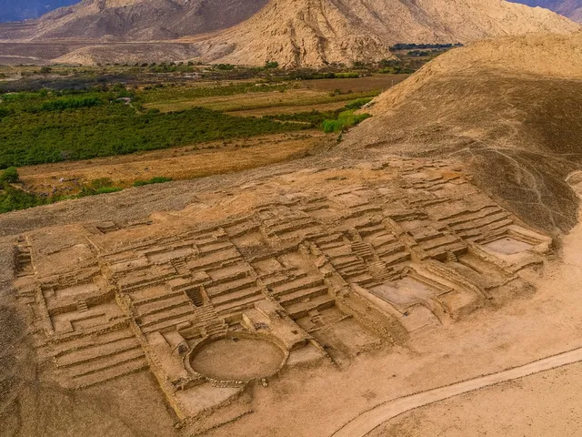
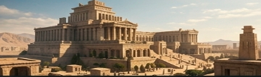

Symbol Matching
LockedMatch pairs of Aurelian symbols to decipher the path to Layer 2.
Dig deeper. Discover more.
Uncover the secrets of a forgotten civilization buried by time.
Click the pulsing gold circles on the excavation grid to dig for artifacts.
Sector A7 — Layer 1. The uppermost stratum reveals traces of daily Aurelian life.
Sector A7 — Layer 2. Compact clay rich with trade goods and inscribed ostraca.
Sector A7 — Layer 3. A sacred chamber where priests once performed solar rites.
Browse all Aurelian artifacts across excavation layers. Select a piece to inspect it.
Your personal record of every artifact discovered at the Aurelian dig site.
Solve ancient puzzles to unlock deeper excavation layers.
Match pairs of Aurelian symbols to decipher the path to Layer 2.
Enter the sacred glyph sequence to unlock the temple chamber.
Watch the Aurelian civilization rebuild as you uncover more artifacts.


Only shattered columns and buried foundations remain.
Permanent record of every artifact unearthed at Sector A7.
Milestones earned through your archaeological discoveries.
Manage your excavation session.
Progress is automatically saved to your browser. You can reset all discoveries and start fresh below.